Everything that happens to the fruit after it is checked in, until a pallet or a juice bin leaves on a truck: sulfur tents, acid baths, pallet stacking, delivery notes and export paperwork, on the phones and tablets the floor already carries. And any other process that happens in your pack house can be added as a screen of its own.
TreatmentSulfur tent and acid bath timers with a suggested dose and time, overrun alarms and the daily sulfur log.
Pallet StackScan each pallet's label, record what is on it, and see the day grouped by market.
Delivery and juiceTick pallets onto a delivery note, print or share it, and weigh juice bins onto their own note.
Hosted in South Africa at yourfarm.plaashek.co.za. All screens in this document show demonstration data; names, blocks and figures are invented.
How it fits together
The fruit's route through the pack house
Plaashek Packhouse picks up where Plaashek Harvest's receiving screen leaves off. The blocks, suppliers and workers come straight from Harvest, so nothing is typed twice, and every record names the worker whose badge opened the screen.
Home: one big tile per process, with what is running on it right now. A farm switches on the ones it uses, and any other pack-house step is added as its own tile.
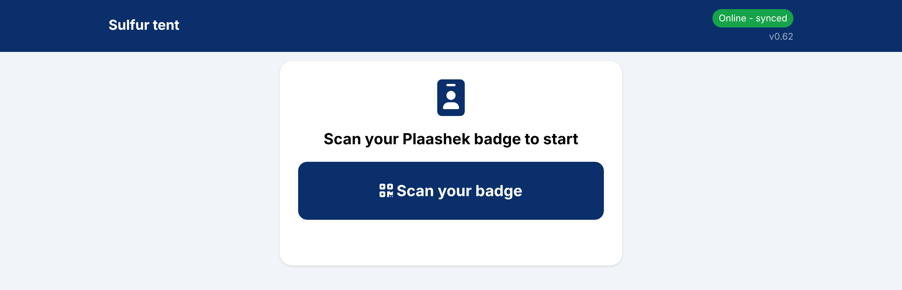
Every floor screen opens with a worker's badge scan, the same badge the field uses.
Built for a pack-house floor
Works on Apple and Android. Tablets for the tents and baths, phones for pallets and delivery notes. Nothing to install from an app store.
Offline on patchy Wi-Fi. A run, batch, pallet or note is saved on the device first and sent when the signal is back. Two tablets never fight over a record.
Badges, not logins. A scan of the worker's badge signs them in for the shift. "Who did this" is on every record.
Settings behind a PIN. The floor screens have no password; the lists, numbers and backups are behind a four-digit PIN that signs out when the tablet is left.
Harvest's data, read only. Blocks, varieties, bought-in suppliers and the day's received lots are offered where they are needed, never retyped.
Your process, your screen. Sulfur, acid, pallets, delivery notes and juice are the steps one pack house needed. A grading line, cold store, pre-pack, fumigation or any other step in your pack house can be added as a screen of its own, with the same badge sign-in, offline capture and reports.
Hosted in South Africa at yourfarm.plaashek.co.za, with daily backups.
Treatment
Sulfur tent
One card per tent. Load the grams, crates, fruit and size, press Start, and the tablet counts down. A tent left too long sounds an alarm on every screen in the pack house.
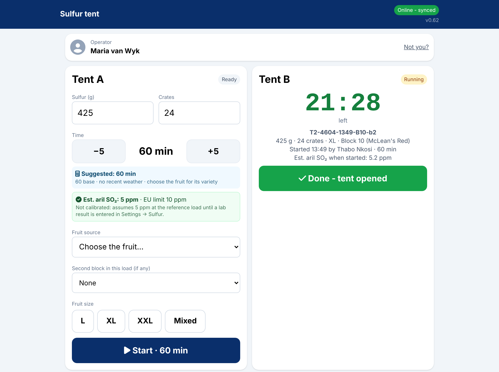
Tent A ready to load with a suggested time and the SO₂ estimate; Tent B running with its countdown and batch number.
Suggested time. A transparent starting rule the farm tunes: the tent's default time, scaled by fruit per gram, today's weather and the variety. The operator always sees why, and can step it up or down.
Aril SO₂ estimate. Shown live against the EU limit, amber from 8 ppm and red from 10, and marked "not calibrated" until a lab result is entered.
Batch number on every run. Tent, date code, time, blocks and a short id, printed on the daily log and carried to the acid bath and the pallet.
Fruit from Harvest. The fruit picker offers today's received blocks and suppliers, with a second block for a mixed load.
Overrun alarm. The screen stays awake while a tent runs and sounds when a tent is overdue, on the sulfur screen and the home screen.
Weather stamped. Temperature and humidity are recorded with each run, for tuning the rule later.
Treatment
Acid bath
The sulfur tent's technique, step for step: a batch is dipping, then drying, then done. Each bath shows when its chemicals are due, by days or by crates since the last change.
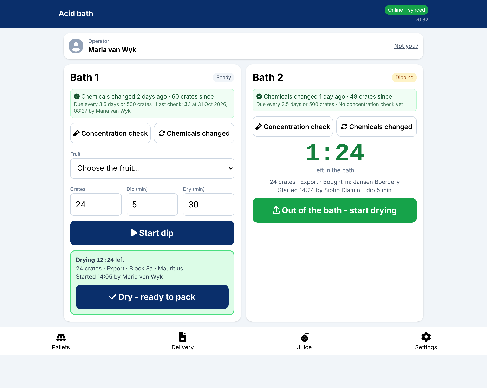
Bath 1 ready with a batch drying below it; Bath 2 mid-dip with the countdown and a bought-in load.
Dip and dry timers. A dip left in sounds the alarm; drying only says ready to pack.
Chemical health. Days and crates since the last change against the bath's own limits, with a concentration check recorded beside it.
Export from finished sulfur runs. An export batch is picked from the runs not yet dipped, its block and crates copied in; local fruit comes straight from the day's receipts.
Every stage one way. A batch cannot be reopened by a stale copy from another tablet.
Packing
Pallet Stack
The paper consignment sheet, on a phone. Scan the pallet label, pick the supplier and market, and list what is on it: cartons, carton type and block. The day builds up under USA, EU and Local headings with their totals.
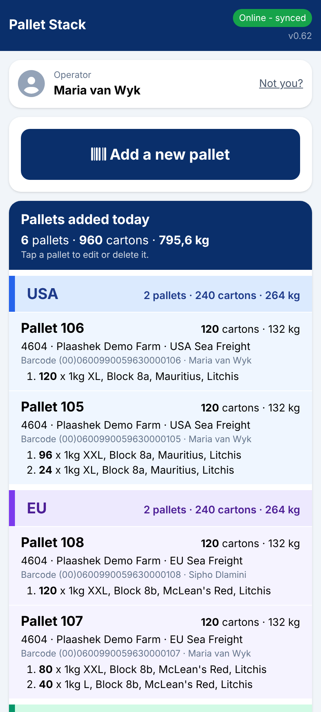
Pallets added today, grouped by market with cartons and kilograms per group.
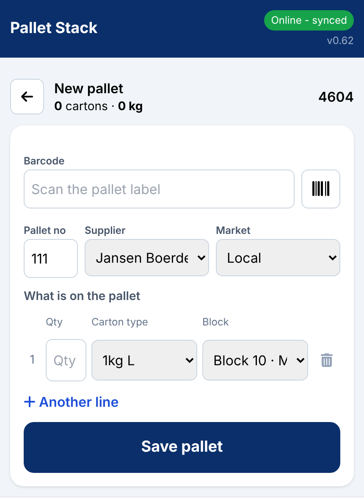
New pallet: scan the label, the next pallet number is offered, add a line per carton type.
Scan twice, trust once. The barcode is taken only when the camera reads it the same twice in a row, so a noisy label never lands on a pallet.
Unique for the season. Pallet numbers and barcodes cannot be reused while a pallet is live; a removed pallet frees its number.
Carton weights from Settings. Each line copies the carton's real weight, so kilograms on the note match the scale and old pallets never change.
Editable until it leaves. Tap a pallet to change or delete it; the pallets of the whole season stay on the phone, folded by market.
Dispatch
Delivery Note
Tick the pallets going on the truck, pick the receiver and transporter, scan the seal, and the note is numbered, saved and ready to print or share from the phone.
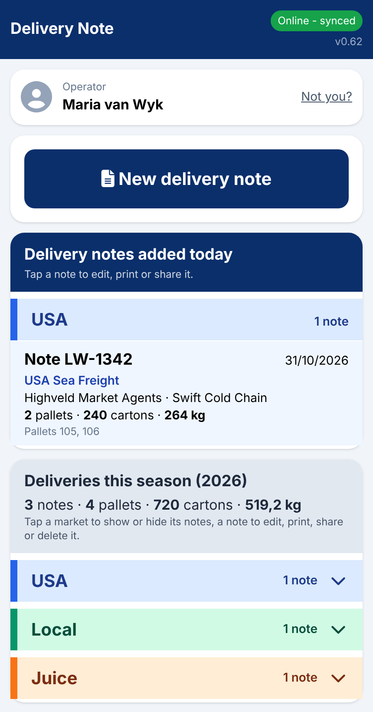
Today's notes and the season's, by market. Tap one to edit, print or share.
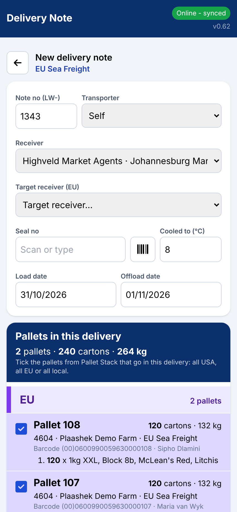
New note: once an EU pallet is ticked the other markets grey out, and the LW- number is offered.
One market per note. A note holds USA, EU or local pallets, never a mix, and a pallet is on at most one live note.
Local notes print the delivery note as a PDF laid out like the paper one, in Afrikaans and English, with "page X of Y" and the signature boxes blank.
Export notes print the market's papers: the phyto accompanying document, the consignment note and the PPECB inspection sheet, as Excel or PDF, with the farm's PUC, PHC and GGN filled in.
Receivers and transporters from Settings, copied onto the note, so a note that has gone out never changes.
Deleting wants the PIN, and frees the pallets for another note.
Juice
Juice bins and crates
Replaces the scale's two stickers per bin. Weigh a bin empty and save it; open it again when it is full. Full bins go on their own J- delivery note.
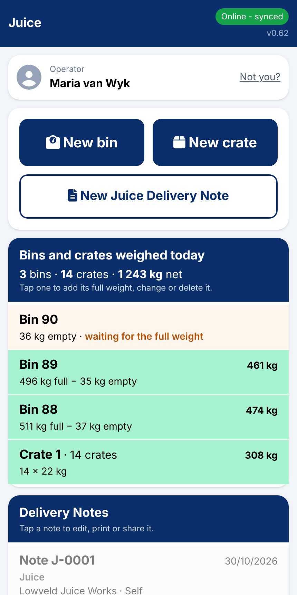
Bins still waiting for a weight first, then the full ones in green, then the juice notes.
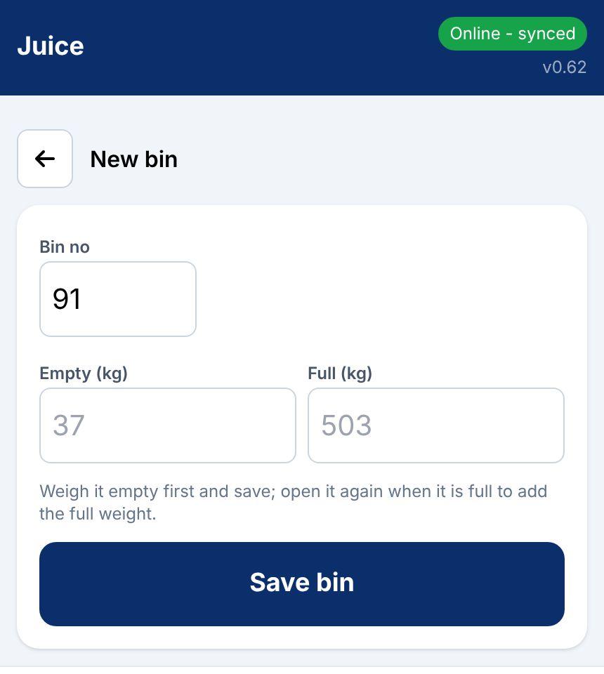
New bin: the next number offered, empty now and full later.
Crates by the batch. A crate record is counted, not weighed: number of crates times weight per crate.
Own number series. Juice notes run from J-0001, apart from the B- and LW- series.
Net weight on the note. Full minus empty per bin, with the load's total.
Settings
Lists, numbers and the sulfur log
Behind the PIN: the tents and baths, the cartons and markets, the receivers, transporters and overseas target receivers, the suggested-time numbers, and the daily sulfur report.
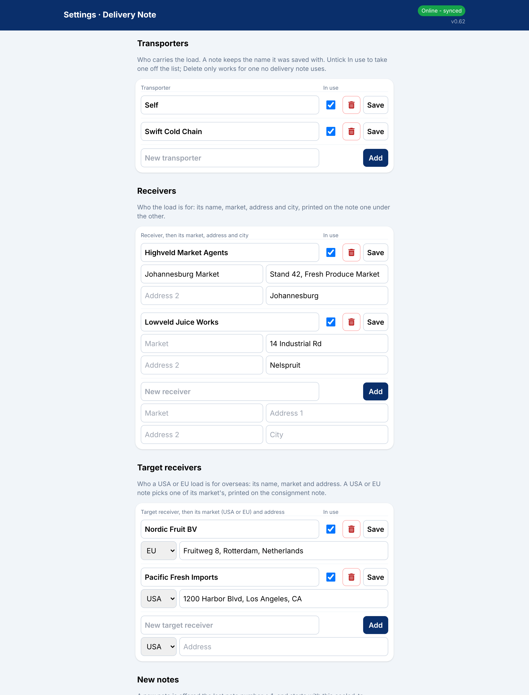
Delivery Note settings: transporters, receivers, USA and EU target receivers, the next note number.
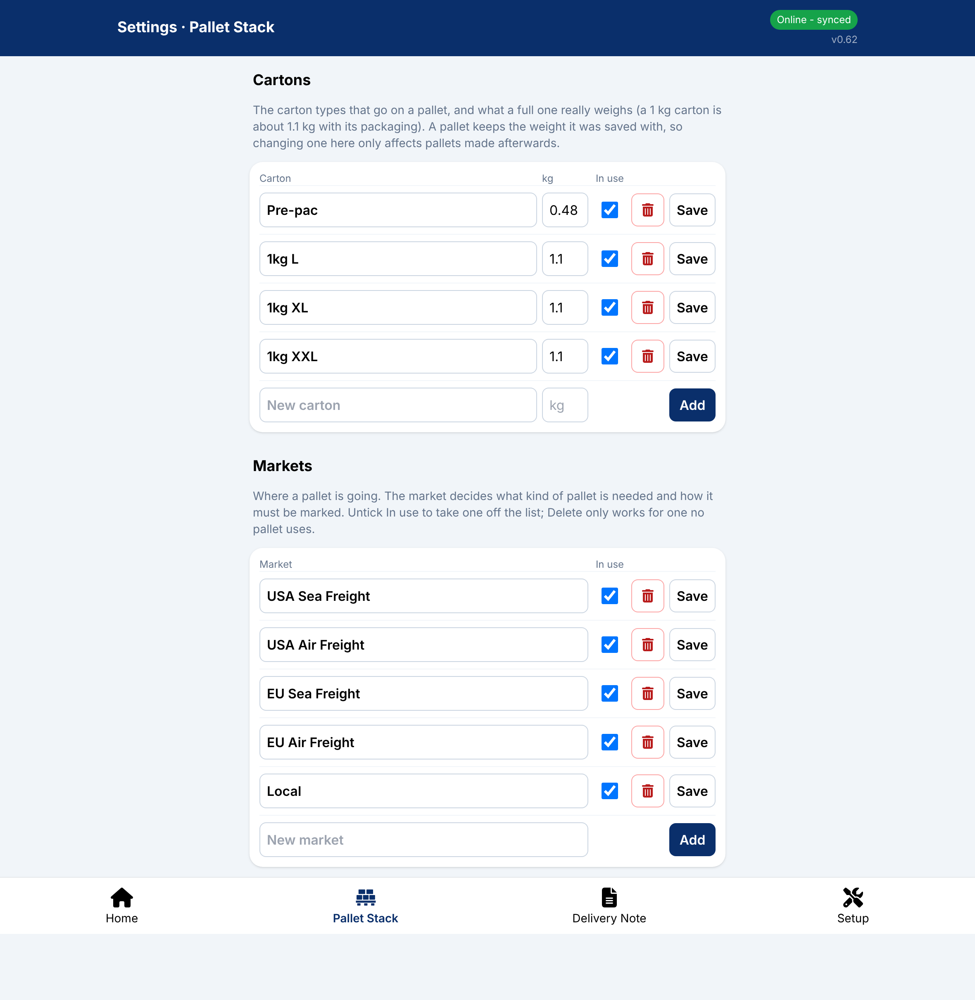
Cartons with their real weight, and the markets.
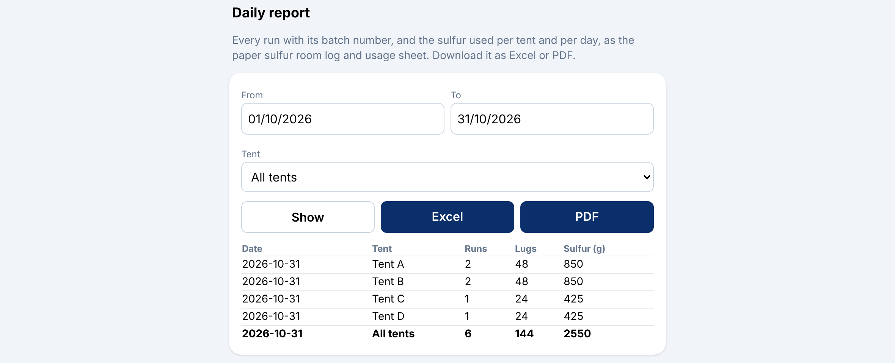
The sulfur room log and usage per tent per day, as a table, Excel or PDF.
Retire, never delete
A tent, bath, carton, market or receiver is unticked when no longer used, so old records keep their names.
Backups
A daily backup of the pack-house data, with Backup Now in Settings.
Settings PIN
Four digits, changed in Settings; five wrong tries lock it for five minutes. Pallet Stack and Delivery Note can also be opened with the PIN when no badge is at hand.
Hosting and data
Your farm lives at yourfarm.plaashek.co.za on a South African hosting service, encrypted in transit and at rest, backed up daily, never shared between farms.
Plaashek Packhouse is one module of the Plaashek suite. It reads Plaashek Harvest's blocks, suppliers, workers and received lots; Harvest's office in turn reads the delivery notes for its Markets tab and planner. Any process that happens in your pack house, from grading to cold store to dispatch, can be added as a screen of its own.